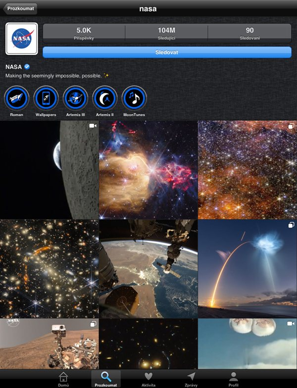
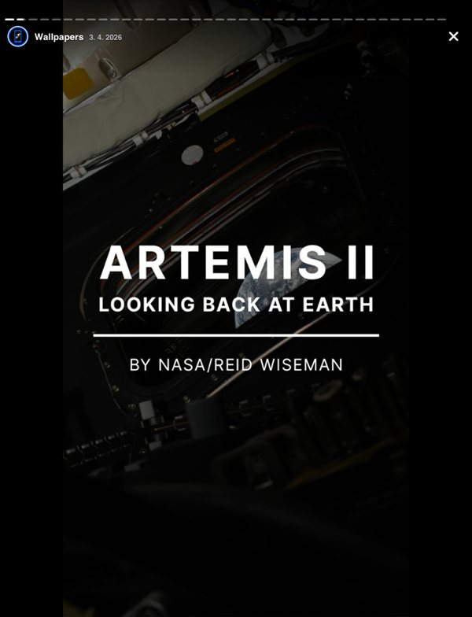
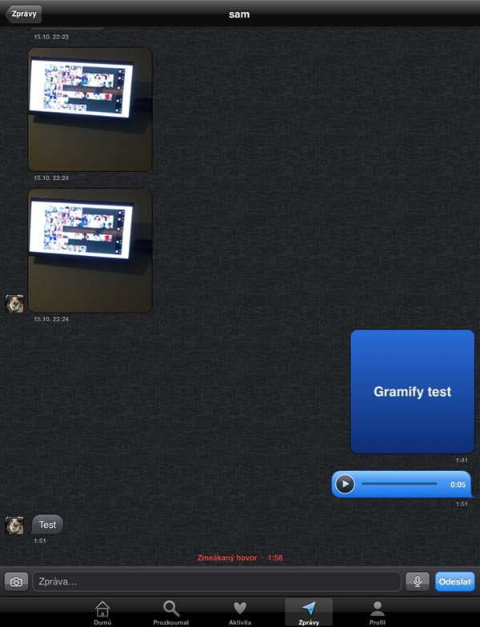
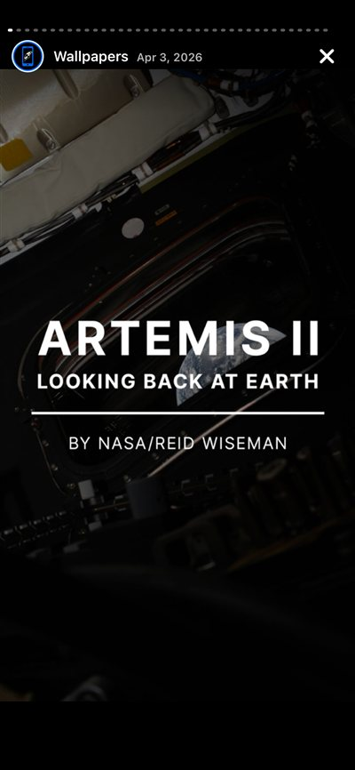
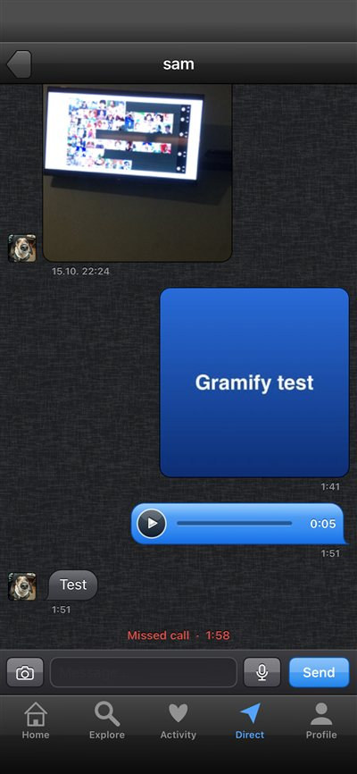

Gramify
Instagram: feed, stories, reels, profiles and Direct
Instagram: feed, stories, reels, profiles and Direct
An unofficial Instagram client for iPhone and iPad in the look of the iOS 6 years: dark linen, list rows with etched lines, glossy chat bubbles and posts as the app looked back then, every glyph drawn, no emoji. Sign in with your own account: the app talks to Instagram the way its Android app does, over its own modern TLS stack, straight from the device - no helper server.









Unofficial apps by samcejko, not affiliated with or endorsed by Twitch, Google, Apple, TikTok, Instagram, Meta, Spotify, Kick, NVIDIA, Mojang, Microsoft, OpenRouter, Vine, X, diVine or the Moonlight, Sunshine and Apollo projects.